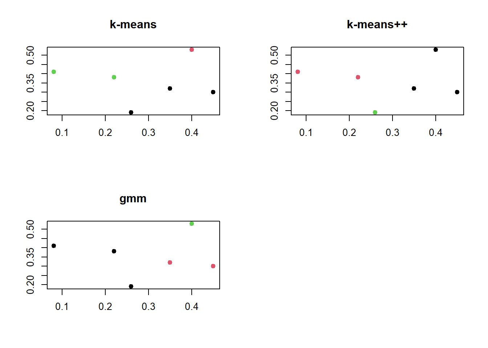
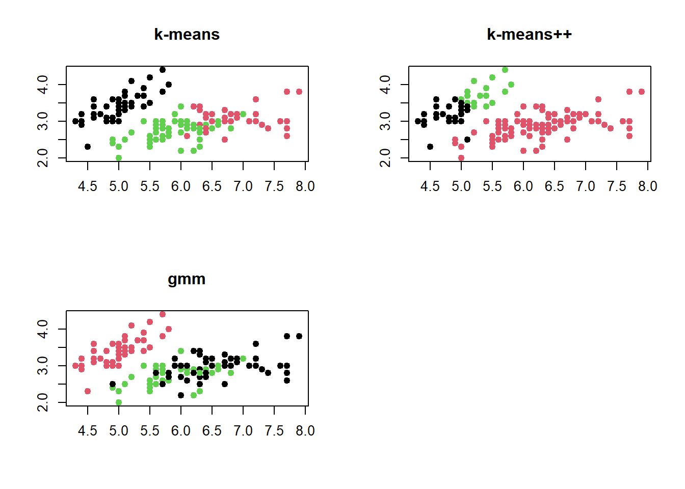

#setwd("P:/Public Folder/clusterOK")x <- c(0.4,0.22,.35,.26,.08,.45)
y <- c(.53,.38,.32,.19,.41,.30)data1 <- data.frame(x,y)
head(data1)str(data1)## 'data.frame': 6 obs. of 2 variables:
## $ x: num 0.4 0.22 0.35 0.26 0.08 0.45
## $ y: num 0.53 0.38 0.32 0.19 0.41 0.3# install.packages("T4cluster")
# load the library
library(T4cluster)## Warning: package 'T4cluster' was built under R version 4.4.2## ** ------------------------------------------------------- **## ** T4cluster || Tools for Cluster Analysis## **## ** Version : 0.1.2 (2024)## ** Maintainer : Kisung You (kisungyou@outlook.com)## ** Website : https://kisungyou.com/T4cluster/## **## ** Please share any bugs or suggestions to the maintainer.## ** ------------------------------------------------------- **##
## Adjuntando el paquete: 'T4cluster'## The following object is masked from 'package:stats':
##
## kmeans# run algorithms
data1 <- as.matrix(data1)
run1 = T4cluster::kmeans(data1, k=3)
run2 = T4cluster::kmeanspp(data1, k=3)
run3 = T4cluster::gmm(data1, k=3)# visualize
par(mfrow=c(2,2))
plot(data1, pch=19, xlab="", ylab="", col=run1$cluster, main="k-means")
plot(data1, pch=19, xlab="", ylab="", col=run2$cluster, main="k-means++")
plot(data1, pch=19, xlab="", ylab="", col=run3$cluster, main="gmm")
data("iris")
str(iris)## 'data.frame': 150 obs. of 5 variables:
## $ Sepal.Length: num 5.1 4.9 4.7 4.6 5 5.4 4.6 5 4.4 4.9 ...
## $ Sepal.Width : num 3.5 3 3.2 3.1 3.6 3.9 3.4 3.4 2.9 3.1 ...
## $ Petal.Length: num 1.4 1.4 1.3 1.5 1.4 1.7 1.4 1.5 1.4 1.5 ...
## $ Petal.Width : num 0.2 0.2 0.2 0.2 0.2 0.4 0.3 0.2 0.2 0.1 ...
## $ Species : Factor w/ 3 levels "setosa","versicolor",..: 1 1 1 1 1 1 1 1 1 1 ...data1 <- data.frame(iris)
str(data1)## 'data.frame': 150 obs. of 5 variables:
## $ Sepal.Length: num 5.1 4.9 4.7 4.6 5 5.4 4.6 5 4.4 4.9 ...
## $ Sepal.Width : num 3.5 3 3.2 3.1 3.6 3.9 3.4 3.4 2.9 3.1 ...
## $ Petal.Length: num 1.4 1.4 1.3 1.5 1.4 1.7 1.4 1.5 1.4 1.5 ...
## $ Petal.Width : num 0.2 0.2 0.2 0.2 0.2 0.4 0.3 0.2 0.2 0.1 ...
## $ Species : Factor w/ 3 levels "setosa","versicolor",..: 1 1 1 1 1 1 1 1 1 1 ...attach(data1)data1 <- data1[, -5]# install.packages("T4cluster")
# load the library
library(T4cluster)# run algorithms
data1 <- as.matrix(data1)
run1 = T4cluster::kmeans(data1, k=3)
run2 = T4cluster::kmeanspp(data1, k=3)
run3 = T4cluster::gmm(data1, k=3)# visualize
par(mfrow=c(2,2))
plot(data1, pch=19, xlab="", ylab="", col=run1$cluster, main="k-means")
plot(data1, pch=19, xlab="", ylab="", col=run2$cluster, main="k-means++")
plot(data1, pch=19, xlab="", ylab="", col=run3$cluster, main="gmm")